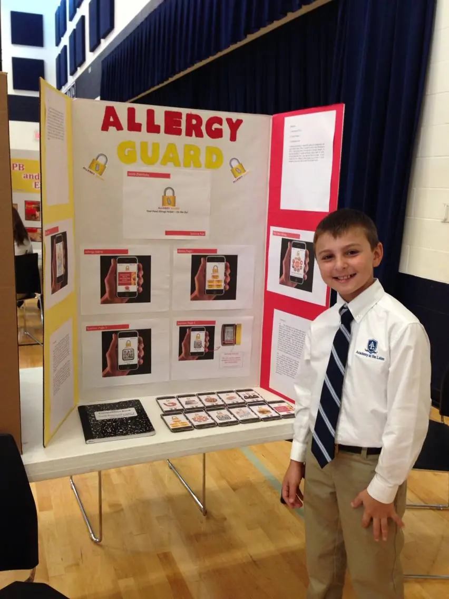

Hi! My name is Jacob Zlotnitsky, and I am the founder and CEO of Allergy Guard.
My vision for Allergy Guard began over a decade ago, when I was merely 10 years old.
In fact, it won me my fourth grade science fair!
Living with severe food allergies to tree nuts and sesame seeds has shaped every aspect of my life.
For many people, eating out is a simple pleasure, but for me, it has always been a source of anxiety.
Dining is the stage where so many of life's most meaningful moments take place — making new friends, going on dates, celebrating birthdays, weddings, and major milestones —
yet each of these experiences has carried an added layer of fear for me.

Every time I consider trying a new restaurant, there is a flood of questions:
Will the staff take my allergies seriously? Are there hidden ingredients I don't know about?
Could one mistake send me to the hospital?
This constant vigilance is exhausting, and it often keeps people with severe allergies from trying new foods, new places, or fully enjoying shared meals.
This is not only my experience, but the experience of tens of millions of Americans with severe food allergies across the United States alone.
My goal with Allergy Guard is to change that — to make dining safer and more inclusive for everyone with food allergies,
so that no one has to miss out on life's most important moments because of fear.